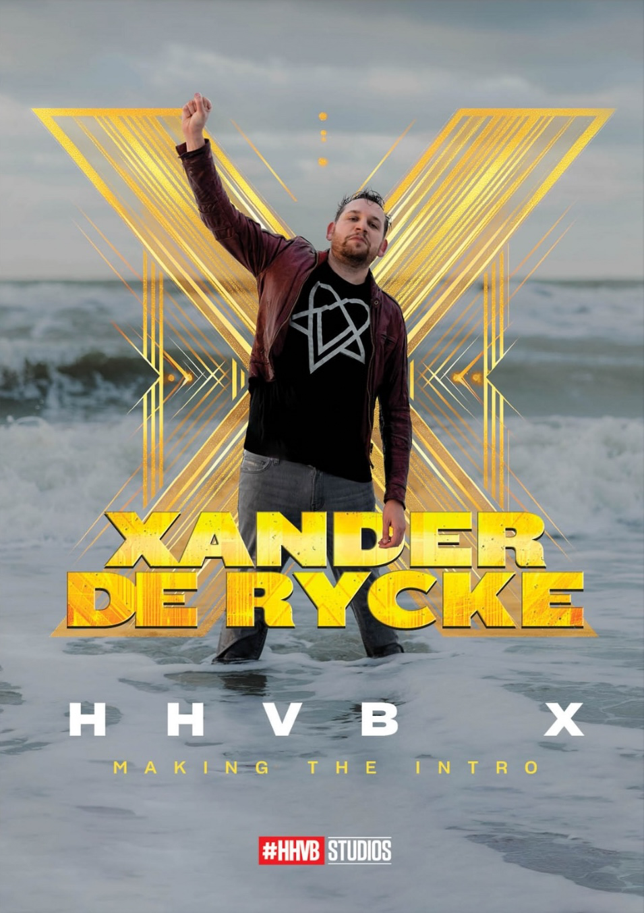
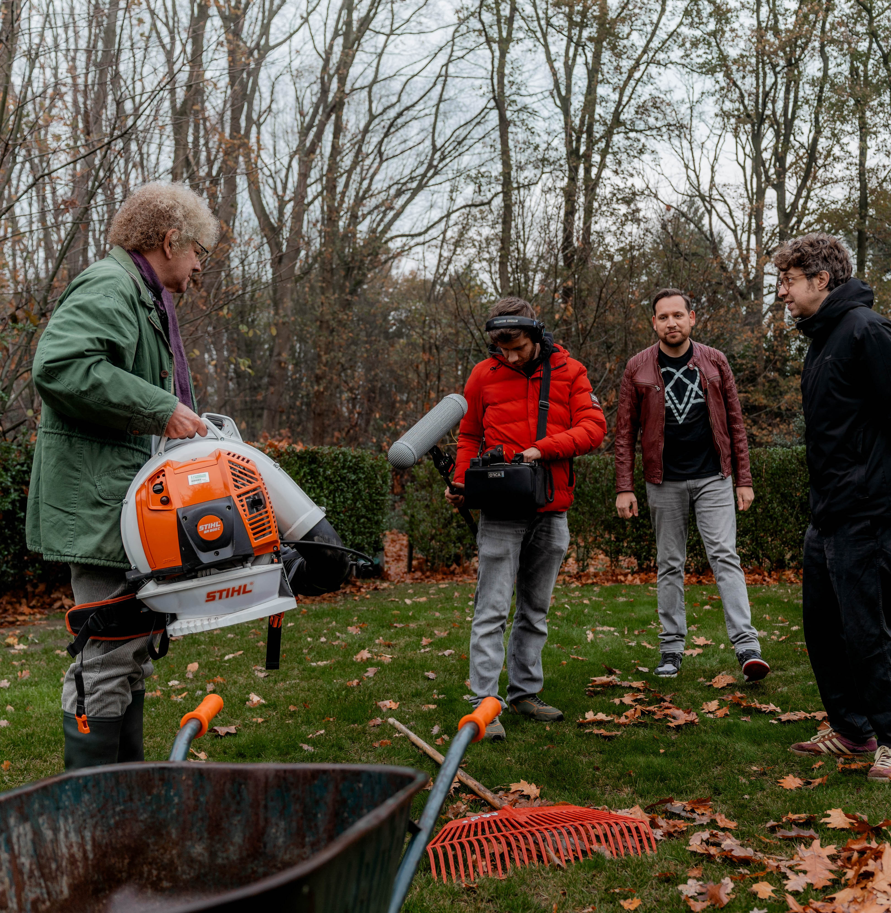
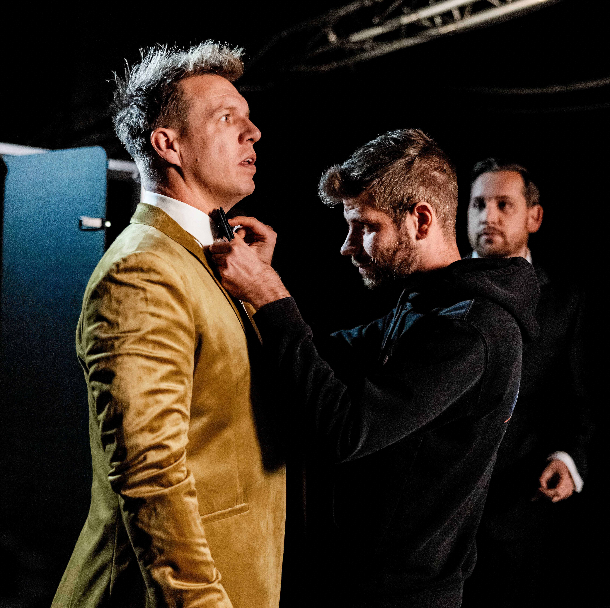
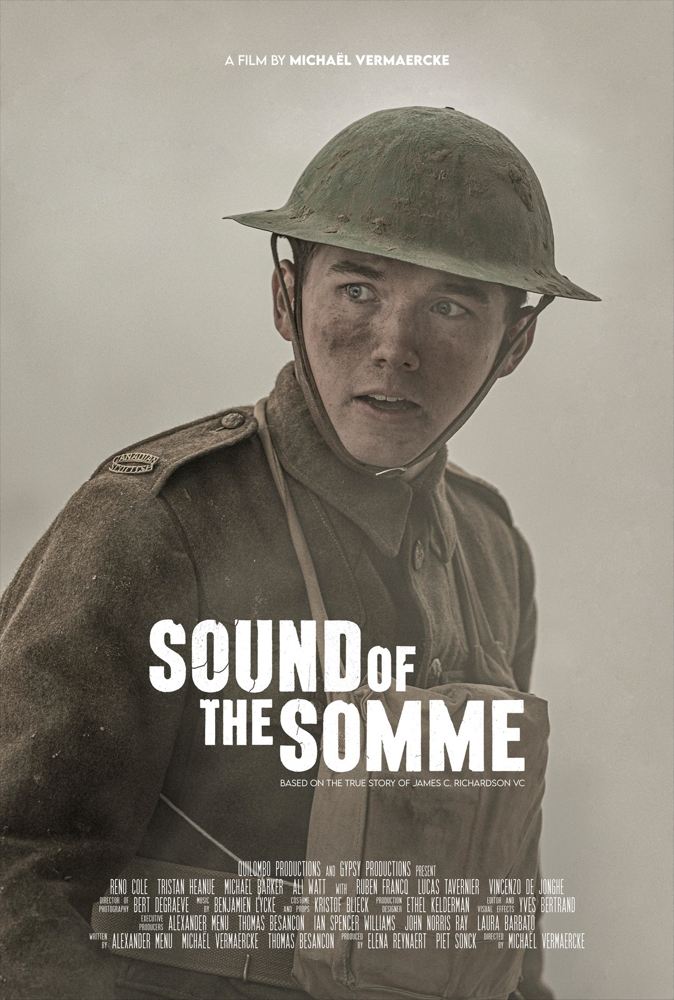
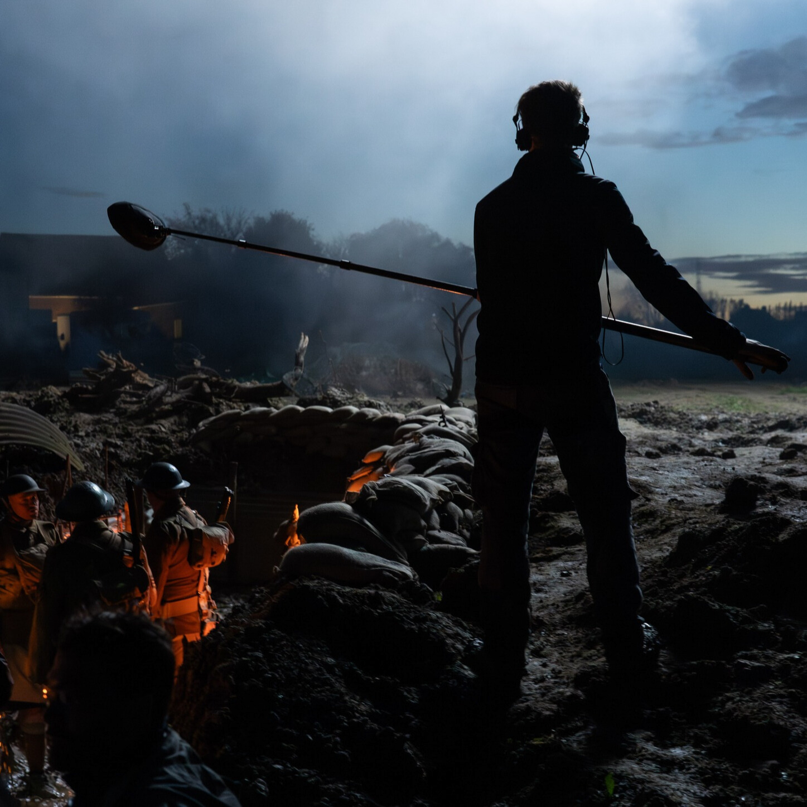
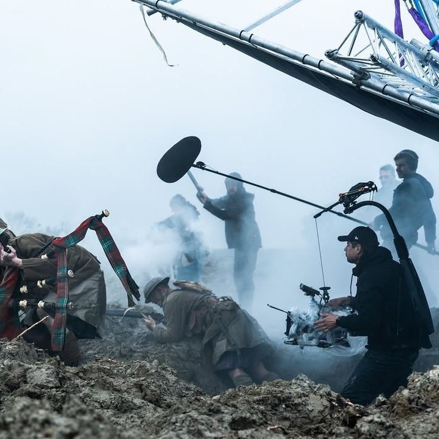
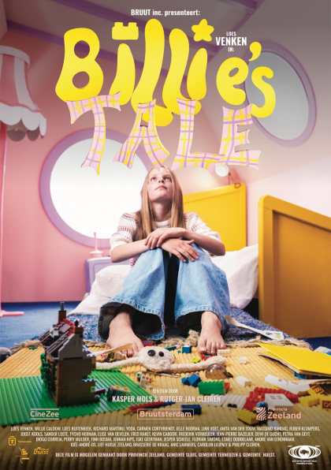
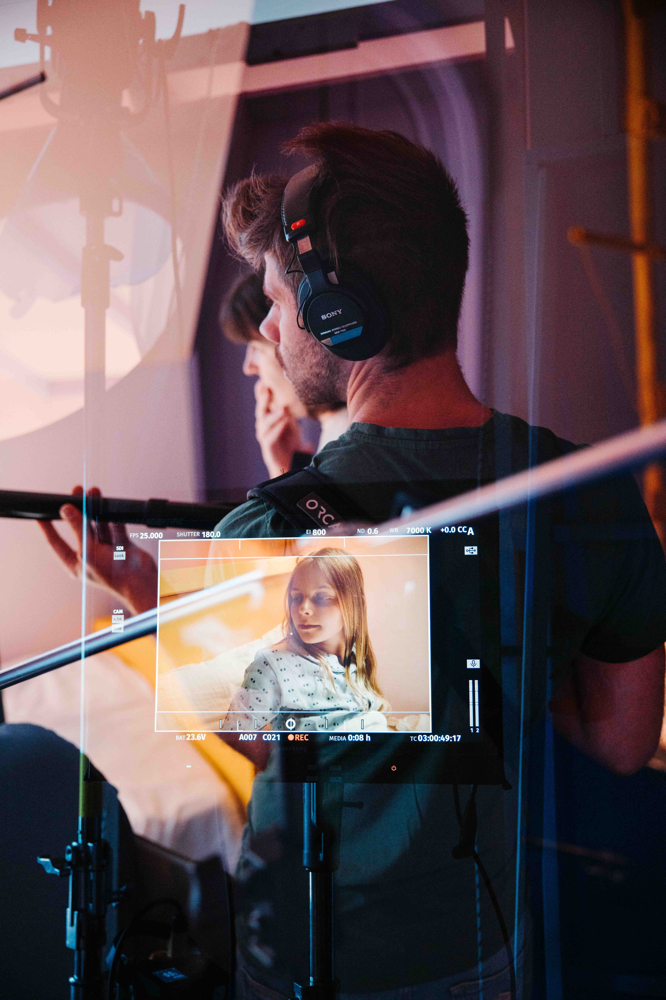

Geluid
Klank is een nieuw gebied waar ik me recent in heb verdiept. Met mijn achtergrond in beeld en techniek heb ik de stap gezet om geluid, en vooral het vastleggen van goede klank, een grotere rol te geven in mijn werk. Ik werk eraan om mijn vaardigheden als klankman verder te ontwikkelen en zorg ervoor dat het geluid even krachtig is als het beeld.
Projecten
Xander De Rycke: Houdt het voor bekeken X
Voor de introfilm van Xander De Ryckes jubileumshow in het Sportpaleis verzorgde ik de geluidsopnames. Een project met 40 cameo's, later uitgezonden op VRT Canvas.
Samenwerking met: Krew Collective, Visuals Internationals en Working Class Heroes.



Sound of the Somme
Als boom operator stond ik vier dagen in de modder voor de opnames van deze kortfilm over de loopgraven. De film ging in première op het Filmfestival Oostende.
Samenwerking met: Quilombo.



Billie's Tale
Een coming-of-agefilm in het Zeeuwse landschap waarvoor ik het geluid verzorgde. Een unieke film met een Schotse voice-over die Billie uiteindelijk verlaat.
Samenwerking met: Bruut Collective.

